library(haven)
library(readr)
library(dplyr)
library(tidyr)
library(ggplot2)
library(summarytools)Assignment - # 5
This is a Behavioral Risk Factor data on Tobacco use from 2011-2019. A Centers for Disease Control and Prevention (CDC), State Tobacco Activities Tracking and Evaluation (STATE) System. The Behavioral Risk Factor Surveillance System (BRFSS) is a continuous, state-based surveillance system that collects information about modifiable risk factors for chronic diseases and other leading causes of death. The data for the STATE System were extracted from the annual BRFSS surveys from participating states. Tobacco topics included are cigarette and e-cigarette use prevalence by demographics, cigarette and e-cigarette use frequency, and quit attempts. Data link CDC Data.
load libraries
rm(list = ls())loading data
Tobacco_Use <- read.csv("Tobacco_Use.csv")Exploratory/Descriptive Analysis
my_data <- Tobacco_Use %>%
select(Year = YEAR, Abbr = LocationAbbr, State = LocationDesc, MeasureDesc, `Data_Value %` = Data_Value, Gender, Race, Age, Education)Remove any missing values if needed
my_data<-na.omit(my_data)
anyNA(my_data)[1] FALSEstr(my_data) 'data.frame': 41224 obs. of 9 variables:
$ Year : chr "2017" "2018" "2017" "2016" ...
$ Abbr : chr "GU" "US" "US" "GU" ...
$ State : chr "Guam" "National Median (States and DC)" "National Median (States and DC)" "Guam" ...
$ MeasureDesc : chr "Current Smoking" "Smoking Status" "Smoking Status" "Current Use" ...
$ Data_Value %: num 30 16.1 58.2 0.5 21.9 21.6 2.8 3.6 29.2 14.8 ...
$ Gender : chr "Male" "Overall" "Overall" "Overall" ...
$ Race : chr "All Races" "All Races" "All Races" "Hispanic" ...
$ Age : chr "All Ages" "All Ages" "All Ages" "All Ages" ...
$ Education : chr "All Grades" "All Grades" "All Grades" "All Grades" ...
- attr(*, "na.action")= 'omit' Named int [1:2117] 11 31 68 95 98 113 144 147 153 164 ...
..- attr(*, "names")= chr [1:2117] "11" "31" "68" "95" ...Cleaning the data
Change character variables to factor
my_data$Year <- as.factor(my_data$Year)
str(my_data) 'data.frame': 41224 obs. of 9 variables:
$ Year : Factor w/ 17 levels "2011","2011-2012",..: 13 15 13 11 7 3 16 1 5 13 ...
$ Abbr : chr "GU" "US" "US" "GU" ...
$ State : chr "Guam" "National Median (States and DC)" "National Median (States and DC)" "Guam" ...
$ MeasureDesc : chr "Current Smoking" "Smoking Status" "Smoking Status" "Current Use" ...
$ Data_Value %: num 30 16.1 58.2 0.5 21.9 21.6 2.8 3.6 29.2 14.8 ...
$ Gender : chr "Male" "Overall" "Overall" "Overall" ...
$ Race : chr "All Races" "All Races" "All Races" "Hispanic" ...
$ Age : chr "All Ages" "All Ages" "All Ages" "All Ages" ...
$ Education : chr "All Grades" "All Grades" "All Grades" "All Grades" ...
- attr(*, "na.action")= 'omit' Named int [1:2117] 11 31 68 95 98 113 144 147 153 164 ...
..- attr(*, "names")= chr [1:2117] "11" "31" "68" "95" ...Summary Statistics
summary(my_data) Year Abbr State MeasureDesc
2017 : 5348 Length:41224 Length:41224 Length:41224
2016 : 5331 Class :character Class :character Class :character
2018 : 4667 Mode :character Mode :character Mode :character
2011 : 3619
2014 : 3593
2013 : 3592
(Other):15074
Data_Value % Gender Race Age
Min. : 0.00 Length:41224 Length:41224 Length:41224
1st Qu.: 5.10 Class :character Class :character Class :character
Median :17.10 Mode :character Mode :character Mode :character
Mean :25.36
3rd Qu.:38.90
Max. :99.90
Education
Length:41224
Class :character
Mode :character
Distribution of Numeric Variables
# Histogram for 'Data_Value %'
ggplot(my_data, aes(x = `Data_Value %`)) +
geom_histogram(binwidth = 1, fill = "blue", color = "black") +
labs(title = "Distribution of Data Value in %", x = "Data Value", y = "Frequency")
# Convert Age to a factor for categorical analysis
my_data$Age <- as.factor(my_data$Age)
summary(my_data$Age) 18 to 24 Years 18 to 44 Years 25 to 44 Years 45 to 64 Years
1091 1091 1091 1091
65 Years and Older Age 20 and Older Age 25 and Older All Ages
1091 3273 3273 29223 # Load necessary library for visualization
library(ggplot2)
# Bar plot of Age distribution
ggplot(my_data, aes(x = Age)) +
geom_bar() +
theme_minimal() +
labs(title = "Age Distribution", x = "Age", y = "Count") +
coord_flip() 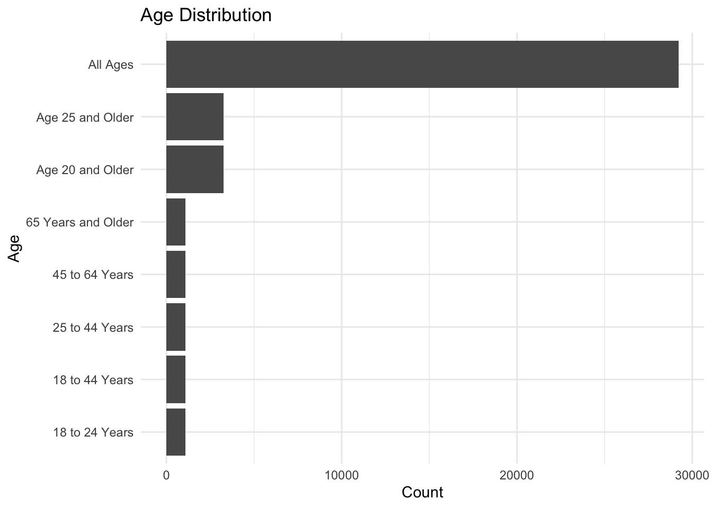
Relationships Between Variables
# Scatter plot between Year and Data_Value %
ggplot(my_data, aes(x = Year, y = `Data_Value %`)) +
geom_point() +
labs(title = "Scatter Plot of Year vs Data Value in %", x = "Year", y = "Data Value %") +
coord_flip() 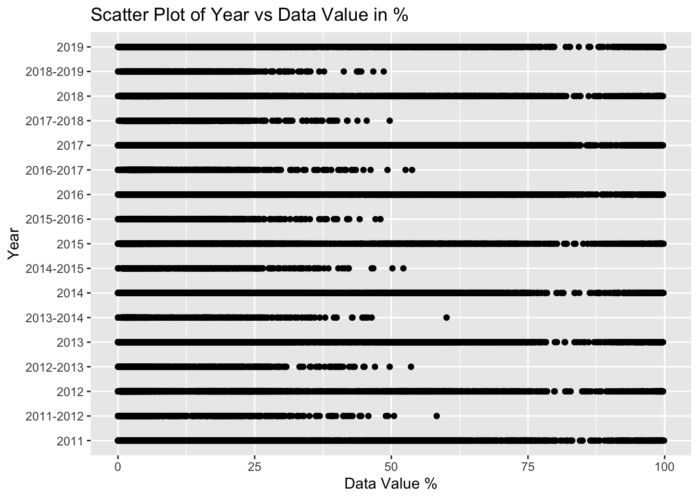
# Box plot for Data_Value % by Gender
ggplot(my_data, aes(x = Gender, y = `Data_Value %`)) +
geom_boxplot() +
labs(title = "Box Plot of Data Value % by Gender", x = "Gender", y = "Data Value %")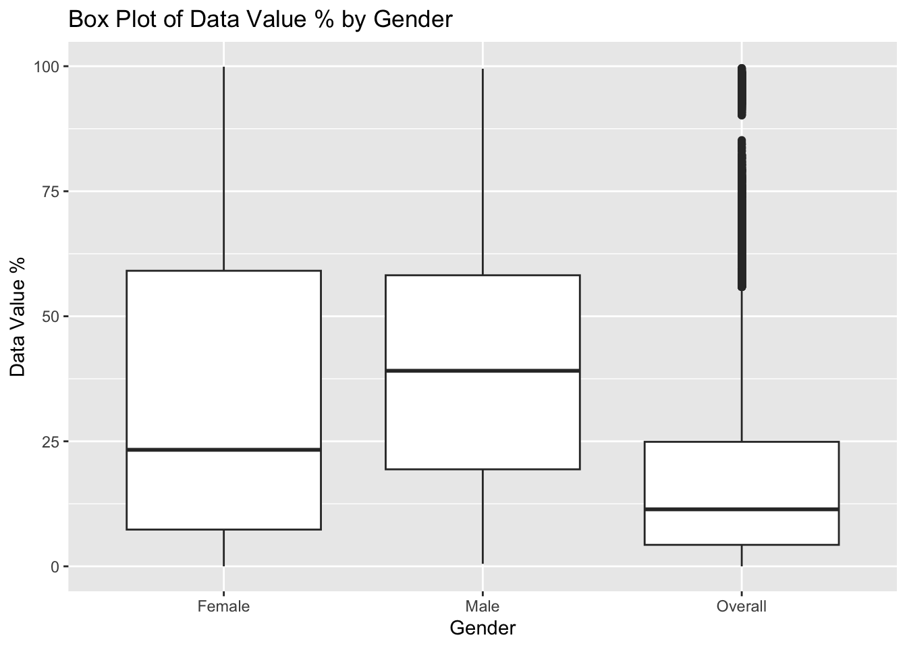
# Box plot for Data_Value % by Race
ggplot(my_data, aes(x = Race, y = `Data_Value %`)) +
geom_boxplot() +
labs(title = "Box Plot of Data Value % by Race", x = "Race", y = "Data Value %") +
coord_flip() 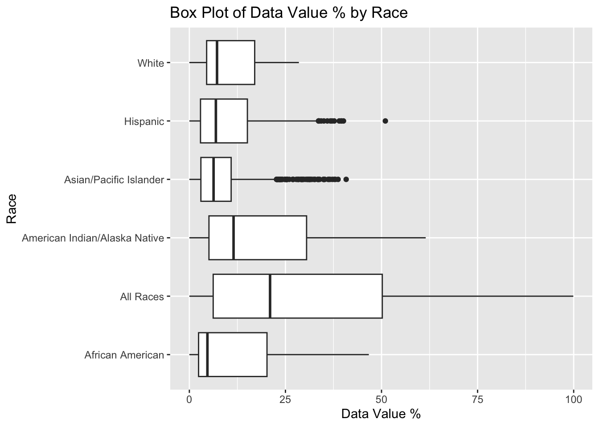
Table 1. Descriptive Statistics
library(dplyr)
library(gtsummary)
# Select relevant columns
my_data %>%
dplyr::select(all_of(c("Year", "Age","Gender","Race", "MeasureDesc", "Education"))) -> my_data_baseline
# Create summary table
my_data_baseline %>%
tbl_summary(
statistic = list(
all_continuous() ~ "{mean} ({sd})"),
missing_text = "(Missing)"
)| Characteristic | N = 41,2241 |
|---|---|
| Year | |
| 2011 | 3,619 (8.8%) |
| 2011-2012 | 508 (1.2%) |
| 2012 | 3,591 (8.7%) |
| 2012-2013 | 500 (1.2%) |
| 2013 | 3,592 (8.7%) |
| 2013-2014 | 496 (1.2%) |
| 2014 | 3,593 (8.7%) |
| 2014-2015 | 498 (1.2%) |
| 2015 | 3,585 (8.7%) |
| 2015-2016 | 494 (1.2%) |
| 2016 | 5,331 (13%) |
| 2016-2017 | 753 (1.8%) |
| 2017 | 5,348 (13%) |
| 2017-2018 | 647 (1.6%) |
| 2018 | 4,667 (11%) |
| 2018-2019 | 491 (1.2%) |
| 2019 | 3,511 (8.5%) |
| Age | |
| 18 to 24 Years | 1,091 (2.6%) |
| 18 to 44 Years | 1,091 (2.6%) |
| 25 to 44 Years | 1,091 (2.6%) |
| 45 to 64 Years | 1,091 (2.6%) |
| 65 Years and Older | 1,091 (2.6%) |
| Age 20 and Older | 3,273 (7.9%) |
| Age 25 and Older | 3,273 (7.9%) |
| All Ages | 29,223 (71%) |
| Gender | |
| Female | 7,411 (18%) |
| Male | 6,958 (17%) |
| Overall | 26,855 (65%) |
| Race | |
| African American | 1,709 (4.1%) |
| All Races | 32,345 (78%) |
| American Indian/Alaska Native | 1,506 (3.7%) |
| Asian/Pacific Islander | 1,666 (4.0%) |
| Hispanic | 1,995 (4.8%) |
| White | 2,003 (4.9%) |
| MeasureDesc | |
| Current Smoking | 8,618 (21%) |
| Current Smoking – (2 yrs – Race/Ethnicity) | 1,988 (4.8%) |
| Current Use | 11,154 (27%) |
| Current Use – (2 yrs – Race/Ethnicity) | 2,399 (5.8%) |
| Frequency of Use | 2,890 (7.0%) |
| Percent of Former Smokers Among Ever Smokers | 1,437 (3.5%) |
| Quit Attempt in Past Year Among Every Day Cigarette Smokers | 1,437 (3.5%) |
| Smoking Frequency | 2,856 (6.9%) |
| Smoking Status | 4,311 (10%) |
| User Status | 4,134 (10%) |
| Education | |
| < 12th Grade | 2,182 (5.3%) |
| > 12th Grade | 2,182 (5.3%) |
| 12th Grade | 2,182 (5.3%) |
| All Grades | 34,678 (84%) |
| 1 n (%) | |
plot to seeif it’s approximately normal,
# Histogram of the continuous variable
ggplot(my_data, aes(x = `Data_Value %`)) +
geom_histogram(binwidth = 1, fill = "blue", color = "black", alpha = 0.7) +
theme_minimal() +
labs(title = "Histogram of Data Values", x = "Data_Value %", y = "Frequency")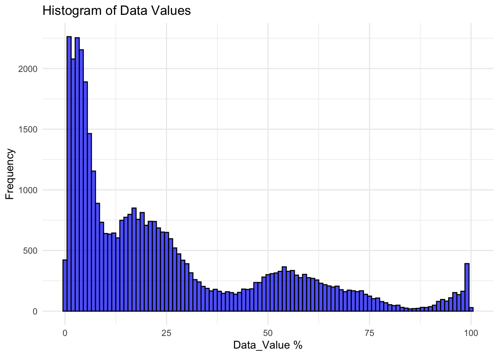
# Q-Q plot of the continuous variable
qqnorm(my_data$`Data_Value %`, main = "Q-Q Plot of Data Values")
qqline(my_data$`Data_Value %`, col = "red")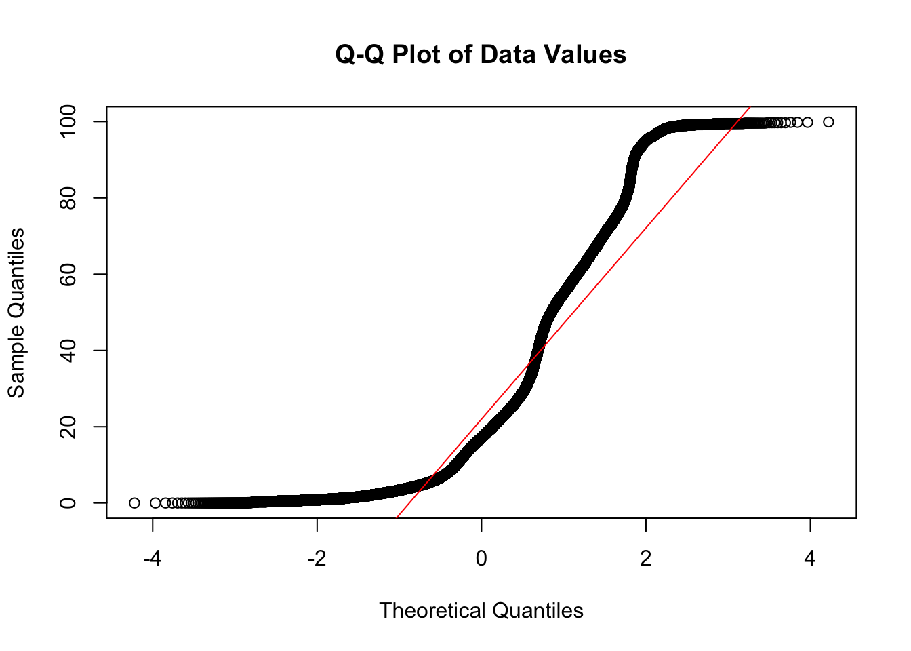
# Density plot of the continuous variable
ggplot(my_data, aes(x = `Data_Value %`)) +
geom_density(fill = "blue", alpha = 0.7) +
theme_minimal() +
labs(title = "Density Plot of Data Values", x = "Data_Value %", y = "Density")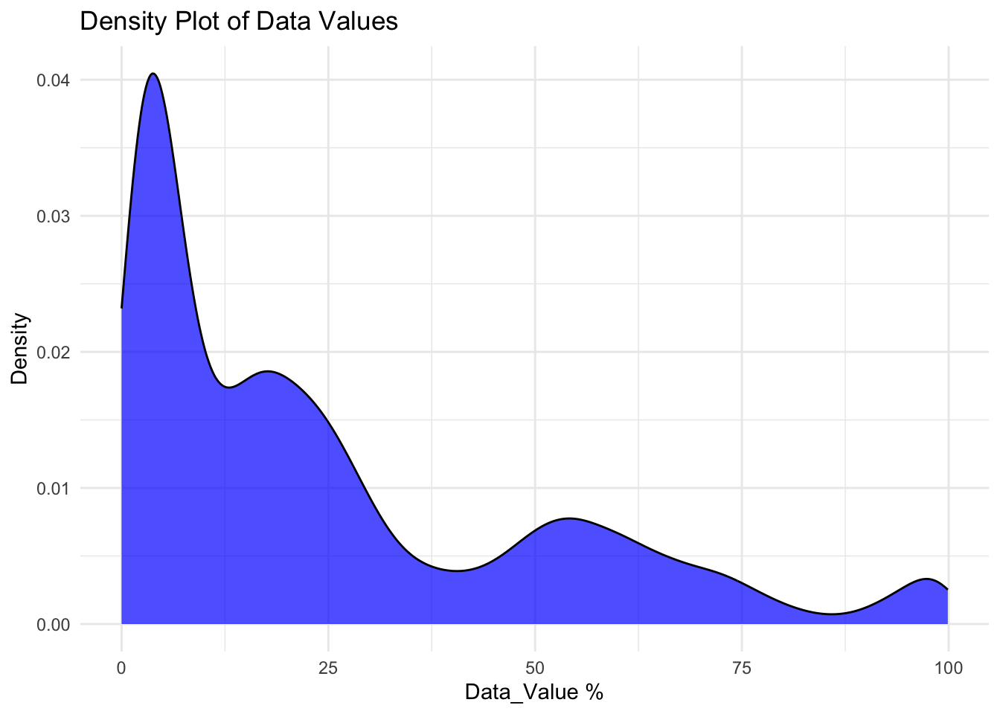
The graphs show tha the distributions are not normally distributed due to the fact that the Q-Q plot has few points at the ends that deviate significantly from the line, indicating potential outliers or deviations in the tails.
Amelia Tristan contributed to this exercise.
set.seed(1000)
n = 1200
data_val = round(runif(n, 0, 100), 2)
#creating smoking data set with age, year, gender, race, education, and smoking status
age_levels = c("18 to 24 Years", "All Ages", "Age 25 and Older", "Age 20 and Older", "65 Years and Older", "45 to 64 Years", "25 to 44 Years", "18 to 44 Years")
year_levels = c("2011", "2012", "2013", "2014", "2015", "2016", "2017", "2018", "2019")
gender_levels = c("Male", "Female", "Overall")
race_levels = c("All Races", "White", "Hispanic", "Asian/Pacific Islander", "African American", "American Indian/Alaska Native")
education_levels = c("All Grades", "> 12th Grade", "< 12th Grade", "12th Grade")
smoke_status = c("Current", "Never", "In the past year", "In the past 3 months", "In the past month", "Socially", "Occasionally")
#creating sample
age = sample(age_levels, n, replace = TRUE, prob = c(round(runif(8, 0, 1),2)))
year = sample(year_levels, n, replace = TRUE, prob = c(round(runif(9, 0, 1),2)))
gender = sample(gender_levels, n, replace = TRUE, prob = c(round(runif(3, 0, 1),2)))
race = sample(race_levels, n, replace = TRUE, prob = c(round(runif(6, 0, 1),2)))
education = sample(education_levels, n, replace = TRUE, prob = c(round(runif(4, 0, 1),2)))
smoking = sample(smoke_status, n, replace = TRUE, prob = c(round(runif(7, 0, 1),2)))
tob_fake = data.frame(age, year, gender, race, education, smoking, data_val)
summary(tob_fake) age year gender race
Length:1200 Length:1200 Length:1200 Length:1200
Class :character Class :character Class :character Class :character
Mode :character Mode :character Mode :character Mode :character
education smoking data_val
Length:1200 Length:1200 Min. : 0.04
Class :character Class :character 1st Qu.:25.80
Mode :character Mode :character Median :51.64
Mean :50.12
3rd Qu.:74.93
Max. :99.64 # Histogram for data_val
ggplot(tob_fake, aes(x = data_val)) +
geom_histogram(binwidth = 1, fill = "blue", color = "black") +
labs(title = "Distribution of Data Value in %", x = "Data Value", y = "Frequency")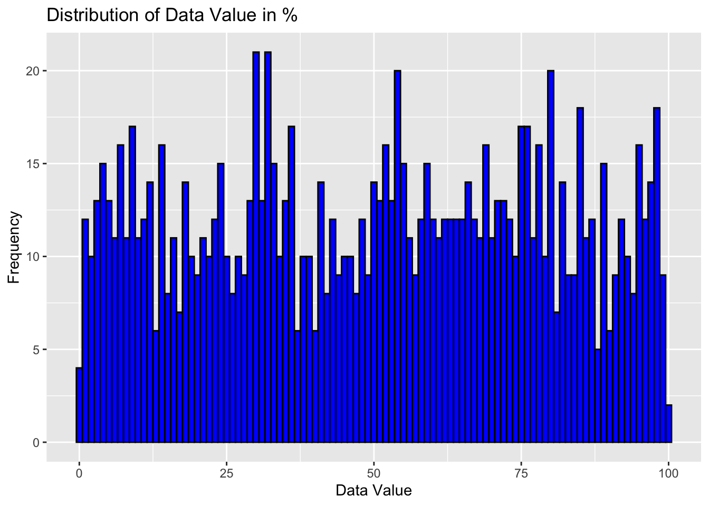
The data values are more evenly distributed than the original data with no apparent skewed distribution(normal).
#age to factor as Moji did
tob_fake$age <- as.factor(tob_fake$age)
# Bar plot of Age distribution
ggplot(tob_fake, aes(x = age)) +
geom_bar() +
labs(title = "Age Distribution", x = "Age", y = "Count") +
coord_flip() 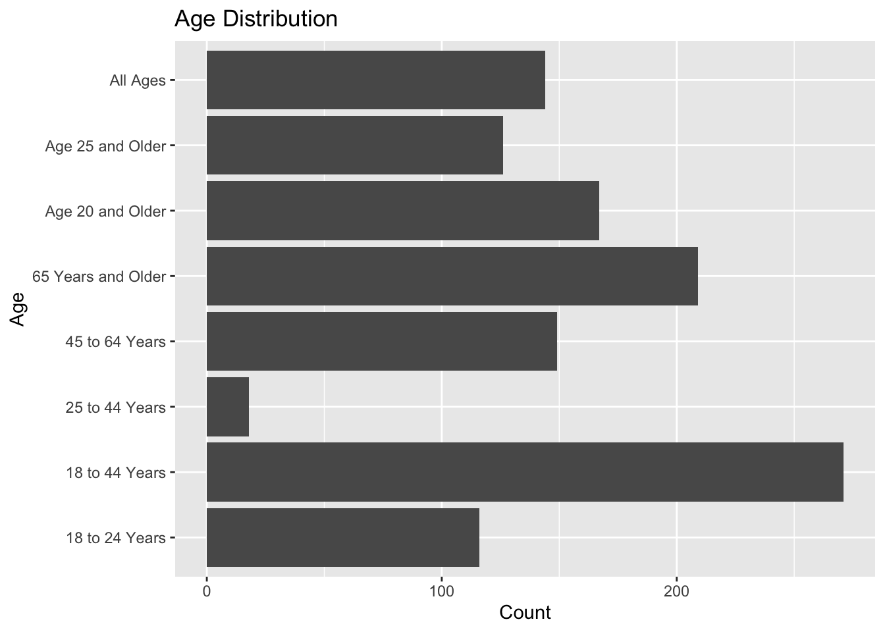
The same can be said for age (normally distributed). All ages has the third highest frequency, unlike the original data (all ages was the top age range).
# Box plot for data_val by Gender
ggplot(tob_fake, aes(x = gender, y = data_val)) +
geom_boxplot() +
labs(title = "Box Plot of Data Value by Gender", x = "Gender", y = "Data Value %")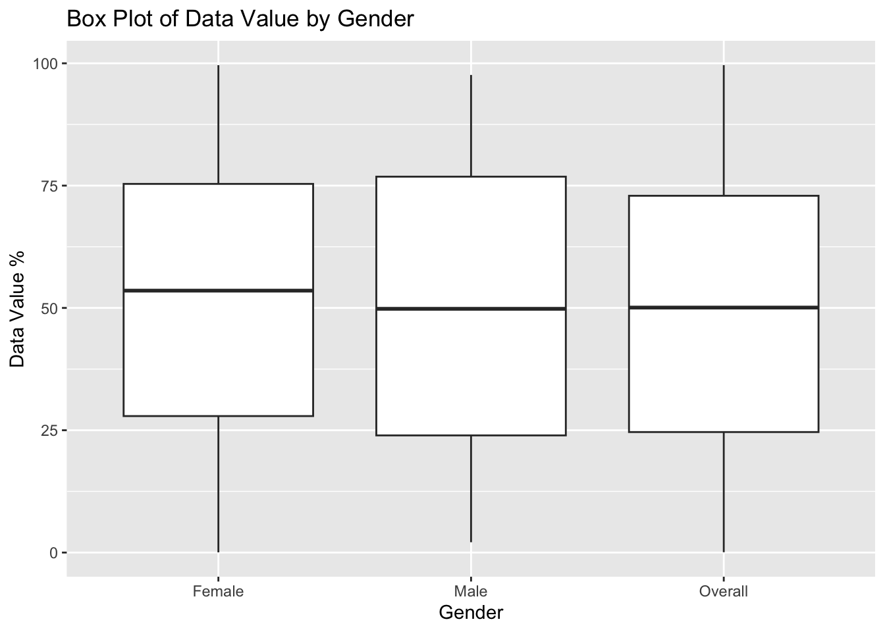
# Box plot for data_val by Race
ggplot(tob_fake, aes(x = race, y = data_val)) +
geom_boxplot() +
labs(title = "Box Plot of Data Value by Race", x = "Race", y = "Data Value %")
#bar plot of smoking status by race
ggplot(tob_fake, aes(x = race)) + geom_bar() + facet_wrap(~smoking) + labs(x = "Race", y = "Smoking Status", title = "Smoking Status Frequency by Race") + coord_flip()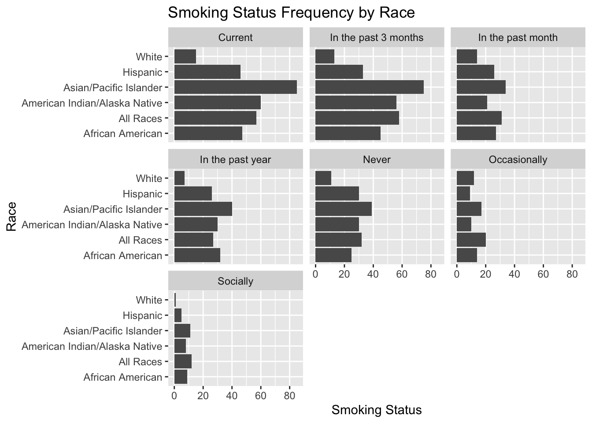
#bar plot of smoking status by education
ggplot(tob_fake, aes(x = education)) + geom_bar() + facet_wrap(~smoking) + labs(x = "Education Level", y = "Smoking Status", title = "Smoking Status Frequency by Education Level") + coord_flip()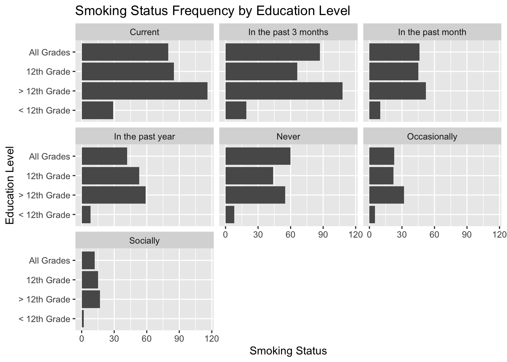
Data values have little variance by gender and race. Race is normally distributed by smoking status across all levels. Education level is skewed by smoking status across all levels.
# Q-Q plot of the continuous variable
qqnorm(tob_fake$data_val, main = "Q-Q Plot of Data Values")
qqline(tob_fake$data_val, col = "red")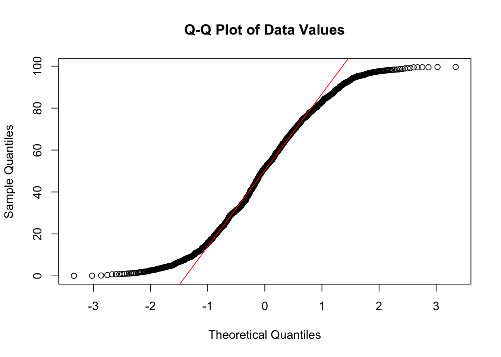
The plot is not normally distributed and is actually similar to the original data’s qqplot. This contradicts the histogram of data values that suggests it is normally distributed.